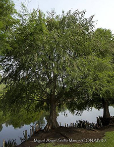
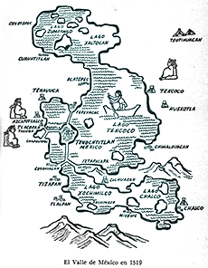
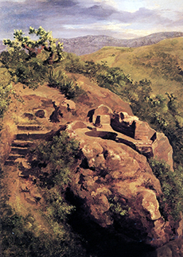

Referencias
- Alva Ixtlixóchitl, F. 2007. Historia de la Nación Chichimeca. 1ª edición cibernética.
- Barbeytia, L. 2006. El rey poeta. Biografía de Nezahualcoyotl. CIDCLI, S.C. México, D.F.
- Franco, L. 2004. Literatura Hispanoamericana. Limusa. México, 460 pp.
- León-Portilla M. 1966. Axayácatl, poeta y señor de Tenochtitlán. Estudios de Cultura Náhuatl. 6:29-45
- Martínez, J.L. 1972. Nezahualcoyotl, vida y obra. Fondo de Cultura y Económica. México, D.F.
- Pimentel, B. L. 1998. Antología de los sistemas de captación de lluvia con fines reforestivos. 177-185 p. En: Anaya M (editor). V Reunión nacional sobre sistema de captación de lluvia. Instituto de Recursos Naturales, Colegio de Postgraduados en Ciencias Agrícolas. Universidad Autónoma de Chapingo, México.
- Veytia, D.M. 1944. Historia Antigua de Méjico, Volumen III. Editorial Leyenda. México, D.F.
Acolmiztli Nezahualcóyotl
1402 - 1472
Me llamo Acolmiztli Nezahualcóyotl. Mi nombre náhuatl, significa “león fuerte, coyote hambriento”. Nací el 28 de abril de 1402 en Texcoco a la orilla del lago del mismo nombre. El lago, aunque somero se extendía ampliamente. En sus orillas entre las chuspatas había cientos de especies de aves alimentándose de peces y ajolotes. En el invierno llegaban las aves del norte a pasar el invierno. Esta era la capital del señorío chichimeca de Acolhuacán, uno de los señoríos más antiguos de la cultura nahua. Mi padre fue Ixtlixóchitl Ome Tochtli (1351-1418), sexto señor de los chichimecas. Mi madre fue la princesa mexica Matlalcihuatzin, hija del tlatoani Huitzilíhuitl (del náhuatl, pluma de colibrí), segundo señor de Tenochtitlán.
Soy descendiente de acolhuas y mexicas, nací y crecí en una época de grandes conflictos entre mi nación acolhua (“con antepasados del agua”). Los acolhuas vivíamos en la orilla oriente del Lago de Texcoco, mientras que la nación tepaneca (“sobre las piedras”), se ubicaba al occidente de Lago. Como consecuencia de esos conflictos, a los 16 años fui testigo de la muerte de mi padre por orden del tepanecatecutli de Atzcapotzalco, Tezozomoc Yacateltetl (1342-1427).
Para que no me mataran tuve que huir y pasar más de diez años viviendo oculto en Tlaxcala, Chalco y Huejotzingo (lugar de los pequeños sauces) al oriente del Iztaccihuatl. Más tarde con la ayuda de las hermanas de mi madre, fui perdonado por el señor Tezozomoc y pude vivir en Tenochtitlán de 1420 a 1426, donde continué mi educación. Además de mi entrenamiento como guerrero, que se inició cuando era muy joven, me interesé en la ingeniería, la arquitectura, la astronomía y la poesía.
Una vez que murió el gran Tezozomoc, su hijo el príncipe Maxtla me persiguió incansablemente tratando de asesinarme. Sin embargo, lo derroté y así terminó largo imperio de los tepanecas, cuando formé la Triple Alianza con Itzcóatl de Tenochtitlán y Totoquiyauhtzin de Tlacopan (hoy Tacuba).
Con el huey tlatoani Itzcoatl en 1427 se inició la expansión del dominio mexica. Su éxito se debió en gran parte a la formación de la Triple Alianza y al apoyo de su sobrino y principal consejero el Cihuacoatl Atecpanécatl, mejor conocido como Tlacaélel, hermano de Chimalpopoca (3er huey tlatoani) y de Moctezuma (5º huey Tlatoani) y consejero de por lo menos tres tlatoanis mexicas con los que conviví.
Durante mi gobierno, recuperado en 1429, realicé muchas obras, como la creación de uno de los primeros jardines botánicos en el cerro de Tetzcotzingo. Aquí desarrollé un complejo sistema de canales que traían el agua desde el Cerro Tláloc y rodeaban al Tezcotzingo, creando cascadas, baños y proporcionando agua a cientos de terrazas en donde cultivaba gran variedad de plantas, en particular de plantas medicinales. Me deleitaba tanto el estudio de la naturaleza que en mi palacio tenía todos los animales y plantas que se criaban en el territorio de mi imperio y los que no podía adquirir, por ser de diversos climas, hacía que se pintaran en los muros del palacio. El cerro de Tetzotzingo, estaba rodeado de bosques que se extendían por las faldas de los volcanes. Desde ahí podía contemplar todo el inmenso lago.
Mi gobierno duró 43 años (1429-1472), coincidiendo con el de tres gobernantes mexicas (Itzcóatl 4º, Moctezuma Ilhuicamina 5º y Axayacatl, 6º). Fui gran amigo del hermano de mi madre, mi tío el quinto tlatoani mexica Moctezuma Ilhuicamina (1398-1469), éramos casi de la misma edad. Con él continuamos la Triple Alianza por casi 30 años. A él también le interesaba mucho la naturaleza y creo el jardín botánico de Oaxtepec, primero en todo el continente.
En 1449 lo ayudé en la construcción del Albarradón, un gran dique que separara las aguas salobres de la parte noreste del Lago de Texcoco, de las más dulces del suroeste. Esta obra iba desde la orilla del lago en Iztapalapa en dirección sur a norte hasta Atzacoalco, con más de 15 kilómetros de longitud y 18 metros de ancho. Actualmente se conoce como albarradón de San Cristóbal o de Ecatepec.
El noveno tlatoani Moctezuma Xocoyotzin (1466-1520), biznieto del tlatoani Moctezuma Ilhuicamina e hijo del tlatoani Axayacatl y mi propio nieto, por parte de mi hija Izelcoatzin, fue el que heredó mi gusto por la naturaleza. Él tenía un Totocalli (Casa de animales, en náhuatl), con una gran diversidad de animales.
Dicté normas que protegieran los bosques en el Valle de México. Ayudé a los mexicas a la creación del bosque de Chapultepec con la introducción de sus hermosos ahuehuetes. Mandé construir el primer acueducto formal; reorganicé la recaudación de tributos y la administración de justicia; impulsé la educación, estimulé las artes y fui consejero de los monarcas mexicas. Me preocupé por el estudio y la conservación de la lengua, fui amante de la poesía, actualmente se conocen 30 de mis poemas.
Tuve entre 20 y 30 concubinas y ciento diecinueve hijos. Mi esposa legítima fue Azcalxochiltzin, hija del mexica Temictzin, con quien contraje nupcias alrededor de 1443 cuando tenía 41 años. Morí en el año 1472 a los 70 años. Mi hijo Nezahualpilli Acamapichtli (1464-1515) me sucedió en el trono en 1473, cuando solo tenía ocho años de edad.
Afortunadamente, gran parte de mi vida quedó plasmada por mis descendientes mestizos. Mi nieto Juan Bautista Pomar (1535-1590) escribió “Romances de los señores de Nueva España” y “Relación de Juan Bautista Pomar” y mi tataranieto Fernando de Alva Cortés Ixtlilxóchitl (1568?-1648) escribió la “Historia Chichimeca”.
Mis favoritos
- 
- Ahuehuete (Taxodium Mucronatum)
Foto: Miguel A. Sicilia Manzo / Banco de imágenes, CONABIO
Mis lugares
- 
- Texcoco, Ciudad de México
Mis ideas
- 
- Baños de Nezahualcóyotl (1878). José María Velasco